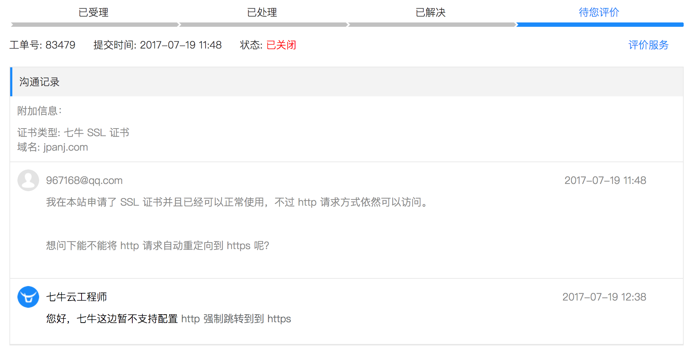

前段时间将博客在七牛上部署了一份，并且为新的域名 jpanj.com 申请了 SSL 证书，但是发现一个问题，使用 http 请求还是可以访问的，想通过 https 的方式访问，需要手动将地址修改为 https，我想有没有什么办法能在用 http 访问时重定向到 https。
所以我开了个工单请教七牛的工作人员，得到的结果是他们也无法做强制跳转。

之前让 http 请求重定向到 https 的方法是通过 Nginx 的 rewrite 完成的，但是我现在的博客是一个纯静态站点，而且并没有托管在自己的服务器上，所以无法这样操作。
今天得到了一个解决方法，是通过修改主题源码来实现的，就我现在用的这个主题来说，layout 目录下所有模板都会继承 _layout.swig，所以我只要在 <head> 标签中加入以下代码即可：
|
|
我只需要判断 jpanj.com 就可以了，之前的 panmax.love 不做修改。